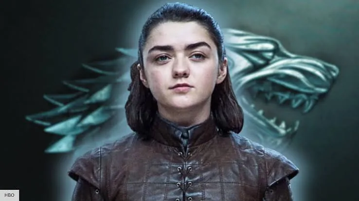
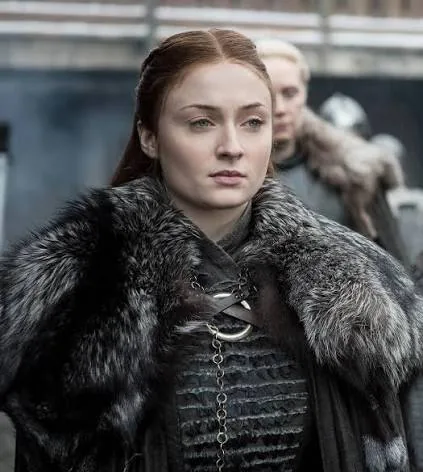
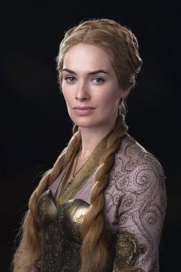

Jon Snow
The King in the North
tap / hover to flipJon Snow
The King in the NorthA reluctant leader whose identity reshapes the struggle for the Iron Throne and the war against the dead.
the people who shaped the realm
Kings, queens, warriors, survivors and schemers — meet the figures who turned Westeros into legend.
Flip a card to read a short profile.
The King in the North
tap / hover to flipA reluctant leader whose identity reshapes the struggle for the Iron Throne and the war against the dead.
Mother of Dragons
tap / hover to flipThe last Targaryen claimant rises across the Narrow Sea with three dragons and an army of followers.
The Hand of the Queen
tap / hover to flipA sharp-minded Lannister who survives court politics through wit, strategy and an inconvenient honesty.

No One
tap / hover to flipA Stark daughter who turns survival into a craft and returns to Westeros with a very long list.

Lady of Winterfell
tap / hover to flipA survivor of the capital who learns to read power, protect the North and rule on her own terms.

Queen of the Seven Kingdoms
tap / hover to flipA queen who treats the throne as both shield and weapon, defending her family at almost any cost.
The Kingslayer
tap / hover to flipA legendary swordsman whose reputation hides a long struggle between duty, love and honor.
The Three-Eyed Raven
tap / hover to flipA Stark who loses the life he knew and gains a strange view of history, memory and what comes next.